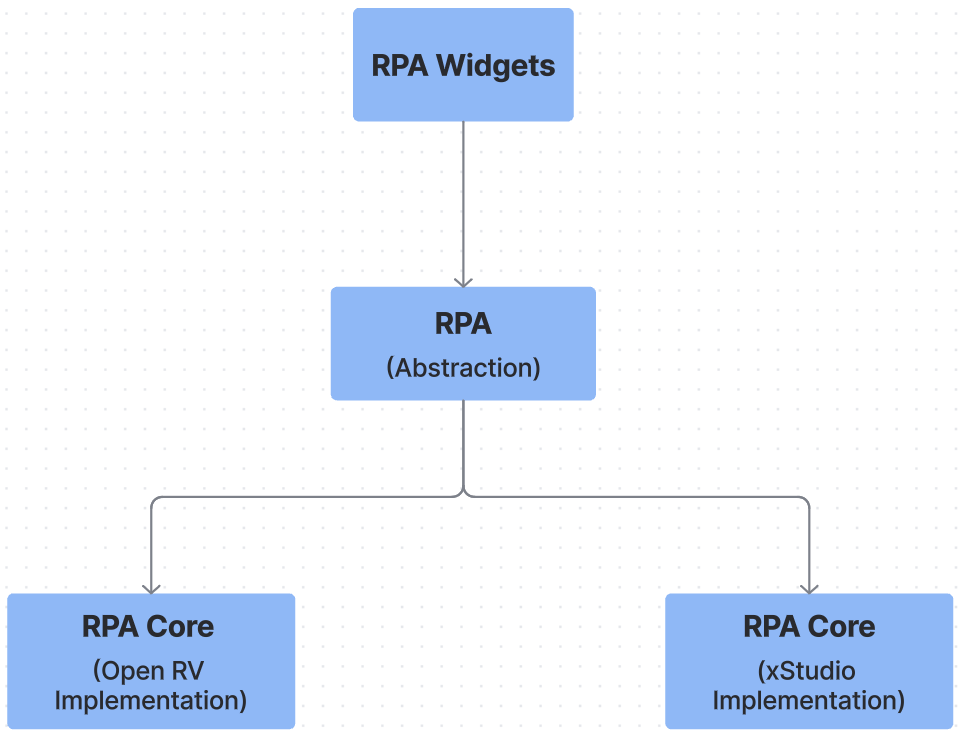
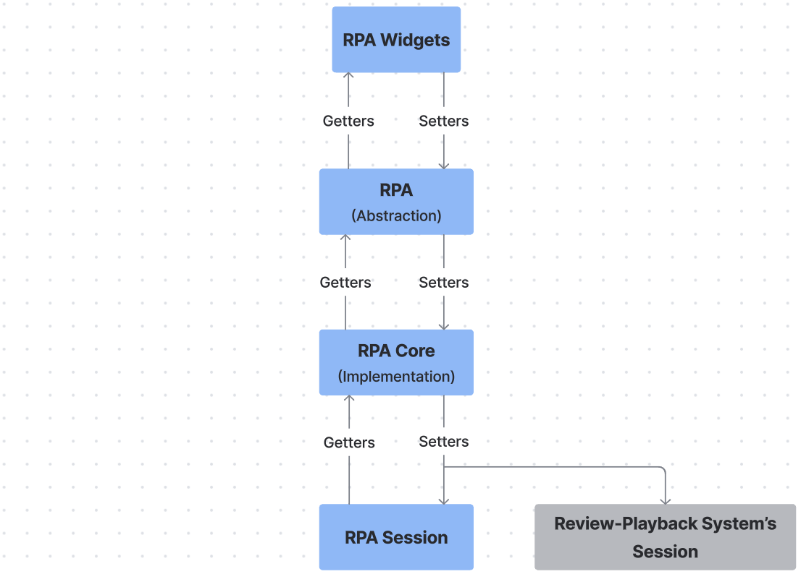
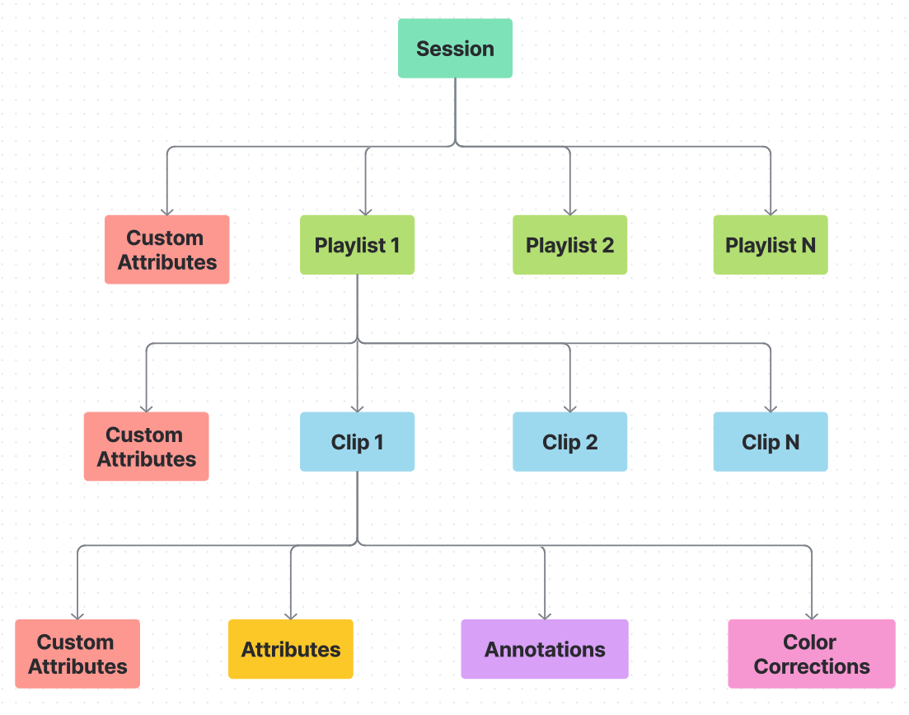

Introduction¶
Value Proposition¶
To empower VFX and Animation studios to use their custom built review workflows and tools across any review-playback system (such as OpenRV or xStudio), RPA provides a unified collection of API modules and widgets.
RPA is designed for pipeline developers to build their review workflows and tools once and deploy them seamlessly across any review-playback system that supports the RPA implementation.
RPA is an abstraction layer between the review widgets you create and the review-playback systems you use.
{kind=link}
Why RPA-Widgets work across Review-Playback-Systems ?¶
RPA widgets work consistently across different review-playback systems because,
RPA widgets are built using RPA-API instead of any particular review-playback-system’s API.
RPA manages its own Session.
Whenever a RPA widget using the RPA API creates playlists or clips, or adds annotations, text notes, or color corrections, RPA updates and maintains this information in its own Session. This Session is completely independent of the underlying review-playback-system’s (like OpenRV or xStudio) session. That means the widgets you build with RPA-API rely only on RPA’s Session and not on the specific review application—ensuring compatibility and flexibility across platforms.
RPA is powered by Academy Sci-Tech Award-winning Itview’s concepts!¶
By using RPA, pipeline developers can instantly tap into a world-class review session which has been built on top of the core-concepts of Sony Pictures Imageworks’ Academy SciTech Award-winning playback system, Itview. With RPA, setting up a review session is simple: You start with a new Session,
Inside a Session, you can organize your work using Playlists.
Each Playlist contains Clips, which represent shots or media files.
Every Clip can store detailed information like attributes, annotations (drawings and texts), and even color-corrections.
In short, RPA makes it easy to build powerful, studio-grade review tools—without reinventing the wheel.
